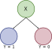
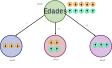
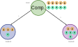
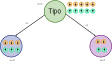
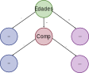
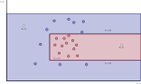
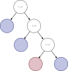

La regresión logística no es una regresión como la regresión lineal, sino, es un método de clasificación. Acá queremos modelar \(y_{i}\) como una función lineal de los \(x_{i}\).
Se definen las etiquetas negativas como 0 y las positivas como 1 (en el caso de la clasificación binaria). Así, si el valor dado por el modelo es cercano a 0 se le asigna la etiqueta negativa y si es cercano a 1, la positiva. Una función que cumple lo anterior es la función sigmoide, la cual está definida como: \[
f(x) = \dfrac{1}{1+e^{-x}}
\]
import mathimport matplotlib.pyplot as pltimport numpy as npimport pandas as pdimport seaborn as snsx = np.linspace(-6, 6, 500)y =1/ (1+ np.exp(-x))sns.lineplot(x=x, y=y)plt.xlabel("x")plt.ylabel("f(x)")plt.title("Función Sigmoide")plt.show()
Si se optimizan los valores de \(\mathbb{x}\) y \(b\) apropiadamente, podemos interpretar la salida de \(f(x)\) como la probabilidad que \(y_{i}\) sea positivo. Así, si esta es mayor o igual a \(0.5\) podemos decir que la clase de \(\mathbb{x}\) es positiva; en el caso contrario, negativa.
Con base en lo anterior, se define el modelo de regresión logística como: \[
f_{\mathbb{w}, b}(\mathbb{x})=\dfrac{1}{1+e^{-(\mathbb{w}\cdot\mathbb{x}+b)}}
\] donde el término \(\mathbb{w}\cdot\mathbb{x}+b\) es familiar de la regresión lineal.
Para hallar los valores óptimos de la regresión logística, queremos maximizar la verosimilitud basados en los datos de entrenamiento de nuestro modelo. Como estamos en el aprendizaje supervisado, asumimos que tenemos datos etiquetados \((x_i, y_i)\).
El criterio de optimización en la regresión logística es llamado máxima verosimilitud, entonces queremos maximizar: \[
L_{\mathbb{w}, b} := \prod_{i=1}^{N}f_{\mathbb{w}, b}(\mathbb{x}_{i})^{y_i}(1-f_{\mathbb{w}, b}(\mathbb{x}_{i}))^{1-y_i}
\]
Para maximizar la ecuación anterior, es más sencillo con la Log-verosimilitud debido al uso de la función exponencial, la cual se define como: \[
\log{L_{\mathbb{w}, b}}
:= \ln(L_{\mathbb{w}, b})
= \displaystyle\sum_{i=1}^{N}y_{i}\ln(f_{\mathbb{w}, b}(\mathbb{x}_{i}))+(1-y_{i})\ln(1-f_{\mathbb{w}, b}(\mathbb{x}_{i}))
\]
Una forma apropiada en la practica para solucionar el problema de optimizacción es usar el descenso del gradiente.
Ahora, dividimos el dataset en set de entrenamiento y prueba.
# split X and y into training and testing setsfrom sklearn.model_selection import train_test_splitX_train, X_test, y_train, y_test = train_test_split( X, y, test_size=0.25, random_state=16)
Creamos el objetivo de regresión logística, se entrena y se aplica para predecir los datos de prueba
# import the classfrom sklearn.linear_model import LogisticRegression# instantiate the model (using the default parameters)logreg = LogisticRegression(random_state=16)# fit the model with datalogreg.fit(X_train, y_train)y_pred = logreg.predict(X_test)
/usr/local/lib/python3.11/site-packages/sklearn/linear_model/_logistic.py:458: ConvergenceWarning:
lbfgs failed to converge (status=1):
STOP: TOTAL NO. of ITERATIONS REACHED LIMIT.
Increase the number of iterations (max_iter) or scale the data as shown in:
https://scikit-learn.org/stable/modules/preprocessing.html
Please also refer to the documentation for alternative solver options:
https://scikit-learn.org/stable/modules/linear_model.html#logistic-regression
Para validar que tan bien (o mal) está nuestra predicción podemos verificarlo con una matriz de confunsión:
115 variables fueron asignadas como 0 cuando inicialmente son 0.
10 variables fueron asignadas como 1 cuando inicialmente son 0 (error tipo 1).
24 variables fueron asignadas como 0 cuando inicialmente son 1 (error tipo 2).
43 variables fueron asignadas como 1 cuando inicialmente son 1.
3.2.2 Ventajas
No requiere alta potencia computacional debido a la eficiencia y sencillez.
No requiere escalar las variables.
3.2.3 Desventajas
No es capaz de manejar una gran cantidad de características categóricas.
Es vulnerable al overfitting.
No se puede resolver problemas no lineales con esta regresión, se deben aplicar ciertas transformaciones.
No funciona con variables independientes o no correlacionadas con la variable a predecir.
3.3 Decision Trees
3.3.1 Definición
Un árbol de decisión (DT) es un grafo no cíclico que se utiliza para tomar decisiones (clasificar). En cada nodo (rama) del grafo se evalúa uno de los features. Si el resultado de la evaluación es cierto (o está debajo de un umbral), se sigue la rama de la izquierda, si no se va a la derecha.

Por lo tanto, los DT son un modelo no paramétrico.
Para crear el DT, se intenta optimizar el promedio de la máxima verosimilitud: \[
\frac{1}{N} \sum_{i=1}^{N}\left( y_i \ln{f_{ID3}(x_i)} + (1-y_i) \ln{(1-f_{ID3}(x_i))}\right)
\] donde \(f_{ID3}\) es un DT y \(f_{ID3}(x) \stackrel{\text{def}}{=} Pr(y=1|x)\)
3.3.2 Construcción
Para construir el árbol, en cada nodo de decisión, se intenta minimizar la entropía de la información.
La entropía de un conjunto \(\cal{S}\) viene dada por: \[
H(S) \stackrel{\text{def}}{=} -f_{ID3}^{S} \log_2 (f_{ID3}^{S}) - (1-f_{ID3}^{S}) \log_2 (1-f_{ID3}^{S})
\]
Y si un grupo se divide en dos, la entropía es la suma ponderada de cada subconjunto: \[
H(S_-, S_+) \stackrel{\text{def}}{=} \frac{|S_-|}{|S|}H(S_-) + \frac{|S_+|}{|S|}H(S_+)
\]
3.3.3 Ejemplo
Consideremos los siguientes datos:
Atributos:
Edad: viejo (v), media-vida(m), nuevo (nv)
Competencia: no(n), sí(s)
Tipo: software (swr), hardware (hwr)
Edad
Competencia
Tipo
Ganancia
v
s
swr
baja
v
n
swr
baja
v
n
hwr
baja
m
s
swr
baja
m
s
hwr
baja
m
n
hwr
sube
m
n
swr
sube
nv
s
swr
sube
nv
n
hwr
sube
nv
n
swr
sube
Cálculo de las entropías: Primero se tiene que probar todos los features para ver cuál tiene mayor ganancia de información (reduce la entropía)
Entropía total: \[
H(S) = \text{Entropía de los casos baja} + \text{Entropía de los casos sube}
\]
Ahora vamos a decidir la primera separación con las edades  \(H = \frac{3}{10} \cdot 0 + \frac{4}{10} \cdot 1 + \frac{3}{10} \cdot 0 = 0.4\)
Ahora vamos a decidir la primera separación con la competencia  \(H = \frac{4}{10} \cdot 0.811 + \frac{6}{10} \cdot 0.918 = 0.8752\)
Ahora vamos a decidir la primera separación con las edades \(H = \frac{4}{10} \cdot 0.811 + \frac{6}{10} \cdot 0.918 = 0.8752\)
Ahora vamos a decidir la primera separación con el tipo  \(H = \frac{6}{10} \cdot 1 + \frac{4}{10} \cdot 1 = 1\)
Concluimos que lo que nos da la máxima ganancia de información es primero decidir por edades, eso nos deja dos nodos hoja y un nodo rama que debemos volver a separar.
Ahora vamos a buscar el segundo nivel, donde vamos a separar el grupo que tiene edades medias por competencia:
Con esto ya se clasificaron todos los datos, puesto que terminamos solo con nodos hojas: 
Esto también se puede hacer con valores numéricos, que de hecho, es lo que se puede hacer con scikit learn 
y con esto se obtiene este árbol de decisión: 
3.3.4 Comandos básicos en python
Estos son los comandos básicos en python
#| label: dibujoArbol01#| fig-cap: "Árbol de decisión"from sklearn import treeX =# Lista con los features (lista de listas)Y =# Lista con los labels# Se define la variable que tendrá el árbolclf = tree.DecisionTreeClassifier()# Se calcula el árbolclf = clf.fit(X, Y)# Se utiliza el árbol para predecir el label de un dato nuevoclf.predict_proba(X0)# Se dibuja el árboltree.plot_tree(clf)
y este sería un ejemplo sencillo en python:
Primero creamos los datos
from sklearn import treefrom sklearn.datasets import make_blobsfrom sklearn.inspection import DecisionBoundaryDisplayimport matplotlib.pyplot as pltimport numpy as np# Creación de los datosX, Y = make_blobs(n_samples=200, centers=4, random_state=6)plt.scatter(X[:, 0], X[:, 1], c=Y, s=30)plt.title("Datos originales")plt.xlabel("x1")plt.ylabel("x2")plt.show()
y lo que devuelve es el número de grupo al que pertene el dato
3.4 Máquinas de Soporte Vectorial
El problema con SVM es que ocurre si los datos no se pueden separar con un hiperplano.
Recordemos que en SVM, se deben satisfacer las siguientes condiciones: a. \(wx_i-b \geq 1\) si \(y_i = 1\), y b. \(wx_i-b \leq -1\) si \(y_i = -1\)
Y la función a minimizar es:
\[\begin{equation*}
\min_{w,b} \frac{1}{2}||w||^2 \text{ sujeto a } y_i(wx_i-b) \geq 1 \text{ para } i=1,2,\ldots,N.
\end{equation*}\]
3.4.1 El truco del kernel
El truco del kernel consiste en transformar los datos a un espacio de mayor dimensión, donde se pueda separar con un hiperplano. El truco consiste en definir una función \(\phi\) tal que \(\phi: x\to \phi(x)\), donde \(\phi(x)\) es un vector de dimensión superior.
El problema de minimización se puede reescribir como:
sujeto a que \(\alpha_i \geq 0\) y \(\sum_{i=1}^{N} \alpha_i y_i = 0\), donde \(<x_i, x_j>\) es el producto punto entre los vectores \(x_i\) y \(x_j\).
En este caso los kernels \(<x_i, x_j>\) se pueden definir como:
# Split the data into training and test setsX_train, X_test, y_train, y_test = train_test_split(X, y, test_size=0.3, stratify=y)# Scale the features using StandardScalerscaler = StandardScaler()X = scaler.fit_transform(X)X_train = scaler.fit_transform(X_train)X_test = scaler.transform(X_test)
7 Ajuste y evaluación del modelo
knn = KNeighborsClassifier(n_neighbors=3)knn.fit(X_train, y_train)# predecir con el modeloy_pred = knn.predict(X_test)# evaluarloaccuracy = accuracy_score(y_test, y_pred)print("Accuracy:", accuracy)